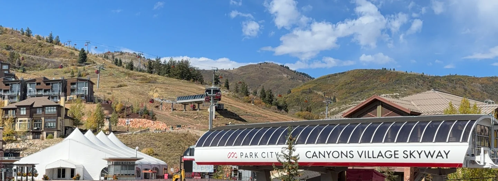

Every listing in Canyons Village says it is close to the lifts. Almost none of them tell you what close means when you are carrying skis, wearing boots, and travelling with somebody who is seven.

How close Westgate Park City is to the lifts is the question people actually want answered before they book, and it is the one most listings answer with an adjective instead of a number. Here is the number, with the caveats that make it useful.
The short answer, and the honest one
The short answer is a few minutes on foot. Westgate's own material describes the property as about 0.3 miles from the gondolas, roughly a five minute walk. Listing sites more often quote three minutes. Guest reviews describe a short walk to the Red Pine Gondola and the Orange Bubble Express.
The honest answer is that all of those numbers describe the same walk measured in trainers, in summer, by somebody not carrying anything. That is the figure every property in every ski village quotes, and it is the reason so many people arrive and feel mildly misled by lodging that was, technically, telling the truth.
What the distance actually is
It helps to separate the walk into the things you are actually walking to, because they are not in the same place and people conflate them.
| Destination | In trainers | In ski boots, carrying gear | What it is |
|---|---|---|---|
| Red Pine Gondola | 3-5 min | 5-8 min | The lift onto the mountain |
| Orange Bubble Express | 4-6 min | 6-9 min | Heated, covered chairlift |
| Village plaza and dining | 2-4 min | n/a | Food, shops, apres |
| Base ticket office | 3-5 min | n/a | Pass collection, first morning |
| Canyons Village Skyway | 3-5 min | n/a | Free gondola to the car parks |
These are our own timings rather than published figures, and they are ranges on purpose. Snow, a queue at the lockers and the size of your group all move them. Treat them as planning numbers, not promises.
Why ski boots change the number
A ski boot is designed to stop your ankle bending. Walking is the thing it is worst at. A flat five minute walk becomes seven or eight, and anything with steps or ice becomes slower again.
The bigger factor is the group. A family of eight moves at the pace of whoever is least happy about their gloves, and that number compounds across a week: two walks a day, seven days, is fourteen crossings of the same plaza. The difference between a three minute walk and an eight minute one is about an hour of your holiday spent shuffling.

Leave the skis at the base overnight in ski storage rather than carrying them back. The walk stops being a carry and becomes a stroll in boots with your hands free, which removes most of the friction above. It is the single best habit for any walk-to-lift property.
Packing well helps too, mostly by cutting what you carry across that plaza each morning. We went through the detail in our packing list for a Park City ski week.
What ski-in means at this building
Worth being straight about this, because the phrase is used loosely across the whole village.
Westgate Park City is slopeside lodging inside Canyons Village with a short walk to the lifts. It is not a property where you step out of a door, click in, and slide. Few things in the village genuinely are, and the ones that claim it often mean the same walk described more generously.
What you are actually buying here is being inside the village rather than outside it. That is the distinction that matters, and it is a bigger one than the three-versus-five-minute argument. From inside the village you walk to the lift. From outside it you drive, park, pay for parking, and ride the Canyons Village Skyway in before you have walked anywhere at all. The Skyway is a fine piece of kit, but it sits below the skiing, and needing it is the thing that separates village lodging from everything else.
Our guide to what ski-in ski-out actually means in Park City goes through the full spectrum of how the phrase gets used locally, and is worth reading before you compare any two listings.
How it compares with the rest of the village
Canyons Village is laid out around the bottom of the Red Pine Gondola, and essentially every property here is described by its distance from that point. A handful sit closer than Westgate. Many sit further out, up the hill or along the access road, where the walk becomes a shuttle ride.
Westgate sits in the useful middle: close enough that walking is genuinely the default, far enough back that you get a proper resort building with a full kitchen and space to spread out rather than a room. For a group of eight that trade is usually the right way round, because the thing that ruins a ski week is more often the evenings than the mornings.
If you want the layout in detail, the floor plan on the homepage shows how the two units combine, and our guide to the resort amenities covers what is on site. For the week itself, Canyons Village ski-in ski-out for Presidents' Week 2027 has the dates and the context.
The villa this guide comes from
We own a Premier Two-Bedroom Villa inside Westgate Park City Resort, in Canyons Village. It is 1,100 square feet, two king bedrooms and two queen sleeper sofas, so it sleeps eight in one unit. Full kitchen, a kitchenette in the lock-off studio, two bathrooms with walk-in showers, and the short walk described above.
It is available for Presidents' Week 2027, 13 to 20 February, and for spring break, 21 to 28 March 2027. We rent it ourselves rather than through an agency.
Common questions
How far is Westgate Park City from the Red Pine Gondola?
Westgate's own material puts the property about 0.3 miles from the gondolas, which is roughly a five minute walk. Listing sites often quote three minutes. Both are describing the same short walk across the village plaza, measured in trainers rather than ski boots.
Is Westgate Park City genuinely ski-in ski-out?
It is slopeside lodging inside Canyons Village with a short walk to the lifts, not a property where you click out of your skis at the door. If door-to-snow access is the thing you are paying for, ask any Park City property to describe the walk rather than trusting the phrase.
How long does the walk take in ski boots?
Allow roughly five to eight minutes rather than three. Ski boots slow everybody down, and a group carrying skis and poles moves at the pace of its slowest member, which with children is slower again.
Can you ski back to the building at the end of the day?
You ski back into Canyons Village and then walk the last stretch, the same walk in reverse. Give yourself more time than you expect on the final run, because everyone else is heading for the same village at four o'clock.
Do you need the Skyway gondola to reach the lifts?
No. The Canyons Village Skyway runs between the car parks and the village, below the skiing. From lodging already inside the village you walk straight to the Red Pine Gondola and never need it on a ski morning.
Where do you store skis overnight?
Use the ski storage at the base rather than carrying gear back to the room. It turns the morning walk into a stroll in boots with nothing in your hands, which is the single thing that most improves a short walk to the lift.